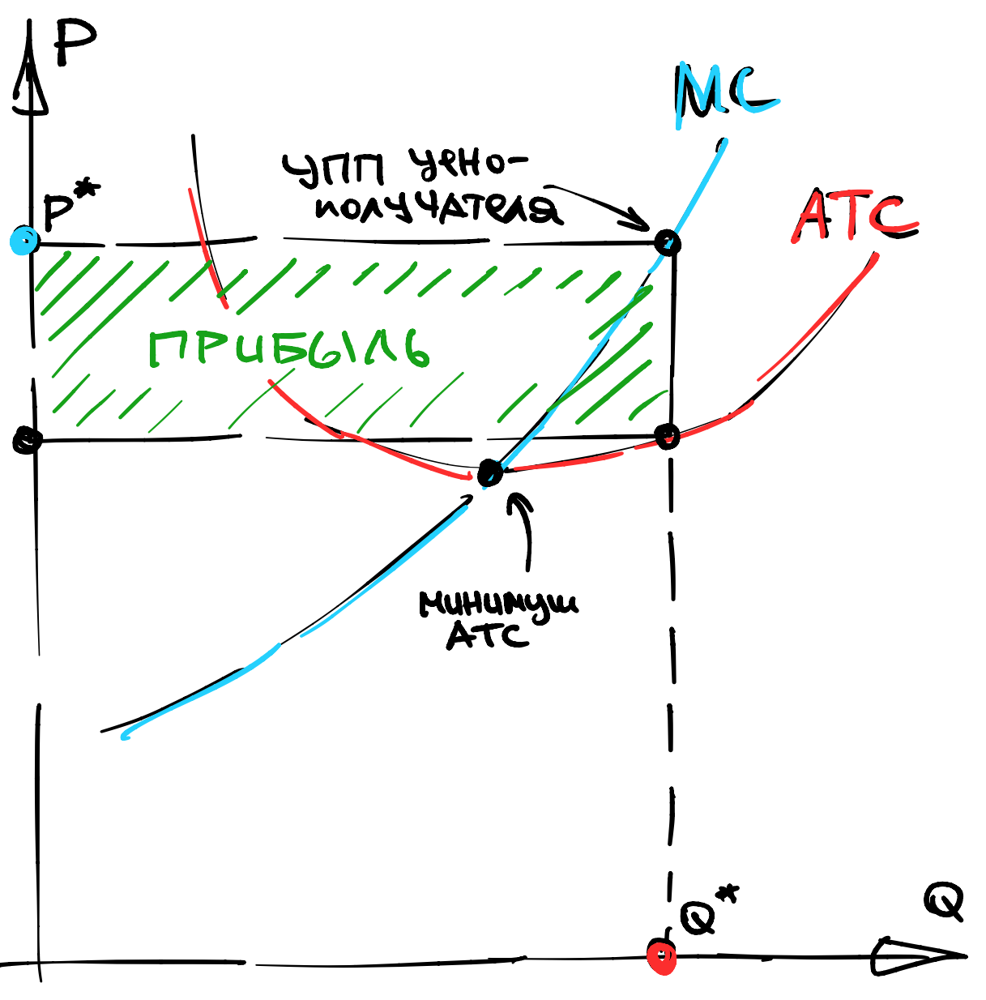
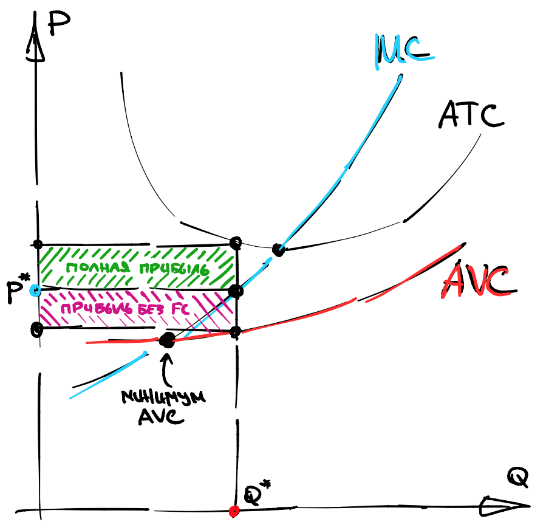

Шестая лекция, часть 1
Contents
Шестая лекция, часть 1¶
В этой секции я буду использовать \(Q\) для обозначения объемов производства (не путать с ценами факторов \(q\)).
Средние издержки¶
Несмотря на доминирование маржиналистского подхода в экономике, некоторые фирмы устанавливают объем производства так, чтобы средние издержки, плюс какая-то субъективная (например, 10%) маржа, были равны рыночной цене. Это не имеет никакого смысла с точки зрения максимизации прибыли, так как прибыль в таком случае будет всегда равна нулю. Единственный смысл в том, что средние издержки легко считаются.
Definition 50
Средние издержки, или ATC(Q), это отношения общих издержек (TC(Q)) к объему производства:
Действительно, монопольная фирма использует правило обратной эластичности \(-1 + P/MC(Q) = -1/\varepsilon\), а конкурентная фирма использует правило \(P = MC(Q)\). Но у функции \(ATC(Q)\) есть одно интересное свойство:
Property 34
Цена, при которой у конкурентной фирмы прибыль равна нулю определяется любым из двух способов:
это минимум ATC(Q) по Q
это пересечение ATC(Q) и MC(Q)
В частности, это означает, что кривые ATC(Q) и MC(Q) пересекаются в той же точке, где у ATC(Q) минимум. Запомните эту картинку “трезубец”:
{kind=link}
Откуда берется такая форма? Из за фиксированных издержек. Назовем переменными издержками \(VC(Q) = TC(Q) - FC\), тогда
Заметим, что первый член убывает гиперболически, а второй член возрастает (как-то) потому, что функция \(TC(Q)\) выпукла, а значит выпукла \(VC(Q)\), а значит должна расти сверхлинейно, ну или хотя бы линейно.
Поэтому, считается что \(ATC(Q)\) имеет U-образную форму. Единственный случай, когда это неверно - это когда фиксированных издержек нет совсем.
Точка закрытия в долгосрочном периоде¶
На той же картинке “трезубец”, мы можем изобразить прибыль фирмы, это площадь прямоугольника со сторонами \(Q\) и \(ATC(Q)-P\).
Definition 51
Назовем пересечение \(MC(Q)\) с \(ATC(Q)\) точкой закрытия в долгосрочном периоде, я буду использовать обозначение \(MC \cap ATC\).
Почему долгосрочном? Потому, что фиксированные издержки (завод, лицензия…) можно “отбить” только в долгосрочном периоде. Очевидно следующее
Property 35
Если цена падает ниже уровня \(MC \cap ATC\) то производитель готов уйти с рынка в долгосрочном периоде.
Что означает закрытие в долгосрочном периоде, на практике? Хозяин бизнеса увольняет всех рабочих, распродает активы и уходит (с деньгами) с рынка.
А что будет происходить в краткосрочном периоде?
Точка закрытия в краткосрочном периоде¶
Поразительно, но если цена падает ниже уровня \(MC \cap ATC\) в краткосрочном периоде, то производитель какое то время может продолжать работать в убыток. Почему?
Дело в том, что в краткосрочном периоде, производитель не воспринимает константу FC как что-то в его власти. Поэтому, везде он видит переменные издержки вместо общих.
Definition 52
Средние переменные издержки, или AVC(Q), это отношения переменных издержек VC(Q)) к объему производства:
На той же картинке “трезубец”, мы можем изобразить прибыль фирмы, за вычетом фиксированных издержек, это площадь прямоугольника со сторонами \(Q\) и \(AVC(Q)-P\).
{kind=link}
Definition 53
Назовем пересечение \(MC\) с \(AVC\) точкой закрытия в краткосрочном периоде, я буду использовать обозначение \(MC \cap AVC\).
Эта новая точка закрытия ниже чем предыдущая, поскольку AVC ниже чем ATC, всегда. Если цена продолжает падать и достигает этого, более низкого, уровня, то прибыль, даже без учета FC, становится нулевой.
Property 36
Если цена падает ниже уровня \(MC \cap AVC\) то производитель останавливает производство в краткосрочном периоде.
Что означает закрытие в краткосрочном периоде, на практике? Это означает, что завод стоит, но на нем никто ничего не производит, то есть \(Q=0\).
Сторож охраняет вход, а владелец бизнеса ждет когда цена отскочит назад, и постепенно думает кому бы продать завод в краткосрочном периоде.
Пример¶
Рассмотрим два завода: высокотехнологичный и так себе.
Высокотехнологичный завод обладает высокими фиксированными но низкими переменными издержками:
Так себе завод наспех огранизован в поле, поэтому обладает нулевыми фиксированными, но высокими переменными издержками.
Проанализируем точки закрытия каждого из этих заводов, в долгосрочном периоде.
Для первого завода это решение уравнения:
Нам повезло, корень целый, и точка закрытия технологичного завода получается равна \(P=3\).
Для второго завода это решение уравнения:
Точка закрытия так себе завода получается равна \(P=2\).
Какой из этого моэно сделать вывод?
При падении цены, первыми терпеть убытки начинают высокотехнологичные заводы. Низкотехнологичные заводы продолжают какое то время получать прибыль из-за того, что их фиксированные издержки малы.
Монополистическая конкуренция¶
Предположим, что есть убывающая кривая спроса на товар, скажем, \(P(Q) = 100 - Q\) и фирмы могут свободно заходить или выходить с рынка.
Предположим также, что у каждой фирмы есть фиксированные издержки входа на рынок, измеряемые FC. Понятно, что весь излишек потребителя конечен - это площадь под кривой. С другой стороны, каждая фирма платит FC за вход, соответственно, количество фирм не может быть очень большим.
Definition 54
Назовем долгосрочным равновесием, или равновесием в монополистической конкуренции, максимальное число фирм, такое что их прибыль (в долгосрочном периоде) положительна, а также равновесную цену и соответствующие объемы производства.
Пример¶
Рассмотрим пример поиска такого равновесия.
пусть есть много идентичных фирм
обозначим суммарный спрос за \(Q_{\sum} = \sum Q_i\)
пусть спрос описывается \(P(Q_{\sum}) = 100 - Q_{\sum}\)
пусть издержки описываются \(FC = 1, \ VC(Q_i) = Q_i^2/2\)
Пусть \(n\) это число фирм. Каждая фирма назначает \(Q_i\) так, что \(P = MC(Q_i)\), то есть, в нашем случае, \(Q_i = P\). Это значит, что суммарное предложение равно
Теперь найдем \(n\) такой, что цена опустится в точку закрытия, для этого сосчитаем \(MC, ATC\):
Приравнивая их друг к другу, мы получаем что
Теперь надо соединить вместе оптимальное поведение фирмы, условие на закрытие рынка и формулу спроса:
Это система из трех уравнений и трех неизвестных, откуда мы можем вычислить число фирм, которое обеспечит нулевую прибыль, но только число надо взять ближайшее целое число снизу:
С 69 фирмами, прибыль будет слишком маленькой для того, чтобы новая фирма вошла на рынок, но все же положительной. Чтобы найти ее, надо пересчитать все заново:
Получится \(P = Q_i = 10/7\). Выручка равна приблизительно \(2.04\), фиксированные издержки равны \(1\) переменные издержки примерно \(1.02\).
Соответственно, прибыль фирмы равна примерно \(0.02\).